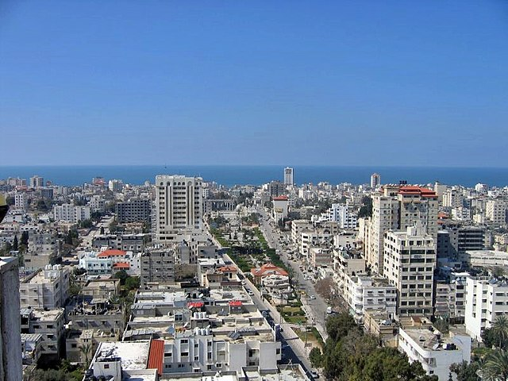

غَزَّة مدينة ساحلية فلسطينية، وأكبر مدن قطاع غزة وتقع في شماله، في الطرف الجنوبي للساحل الشرقي من البحر المتوسط. تبعد عن مدينة القدس مسافة 78 كم إلى الجنوب الغربي، ويحدها من الشمال الشرقي اراضي مدينة الخليل الغربية المحتله منذ عام 1948 وهي مركز محافظة غزة إداريًا وأكبر مدن قطاع غزة، فمن حيث تعداد السكان بلغ عدد سكان المدينة 2،141،000 نسمة في عام 2023م، ما يجعلها أكبر تجمع للفلسطينيين في فلسطين. تبلغ مساحتها 56 كم2، مما يجعلها من أكثر المدن كثافة بالسكان في العالم. تعتبر مدينة غزة من أهم المدن الفلسطينية؛ لأهمية موقعها الإستراتيجي والأهمية الاقتصادية والعمرانية للمدينة، بالإضافة إلى كونها المقر المؤقت للسلطة الوطنية الفلسطينية، ووجود الكثير من مقراتها ووزارتها فيها. أسس المدينة الكنعانيون في القرن الخامس عشر قبل الميلاد، احتلها الكثير من الغزاة كالفراعنة والإغريق والرومان والبيزنطيون والعثمانيون والإنجليز وغيرهم. في عام 635م دخل المسلمون العرب المدينة وأصبحت مركزاً إسلامياً مهماً. يوجد بها قبر هاشم بن عبد مناف الجد الثاني للنبي محمد بن عبد الله، لذلك تُسمى أيضاً غزة هاشم، كما أنها مسقط رأس الإمام الشافعي الذي ولد عام 767م وهو أحد أئمة المذاهب الأربعة عند المسلمين السنة. في التاريخ المعاصر، سقطت غزة في أيدي القوات البريطانية أثناء الحرب العالمية الأولى، وأصبحت جزءاً من الانتداب البريطاني على فلسطين. ونتيجة للحرب العربية الإسرائيلية عام 1948م، تولت مصر إدارة أراضي قطاع غزة وأجرت عدة تحسينات على المدينة. احتلت إسرائيل قطاع غزة عام 1967م (عام النكسة)، وبعد إتفاقية أوسلو بين منظمة التحرير الفلسطينية وإسرائيل عام 1993م، بموجب إتفاق غزة أريحا الموقَّع في 4 مايو عام 1994م انتقلت السلطة المدنية إلى سلطة الحكم الذاتي الفلسطيني. بعد انتخابات عام 2006م اندلع قتال بين حركة فتح وحركة المقاومة الإسلامية حماس، حيث رفضت حركة فتح نقل السلطة في غزة إلى حركة حماس، ومنذ ذلك الحين وقعت غزة تحت الحصار من قبل إسرائيل ومصر. بعد الثورة المصرية في 25 يناير 2011م، فتحت مصر معبر رفح من أجل التسهيل على مواطني غزة، مع أن هذا القرار لم يُشكِّل فارقاً كبيراً. الأنشطة الاقتصادية الأولية في قطاع غزة هي الصناعات الصغيرة والزراعة والعمل، ومع ذلك، فقد دُمر الاقتصاد من خلال الحصار الإسرائيلي والصراعات المتكررة.
أسس المدينة الكنعانيون في القرن الخامس عشر قبل الميلاد. وطيلة تاريخها، لم يكن لغزة حكم مستقل، حيث احتلها الكثير من الغزاة كالفراعنة والإغريق والرومان والبيزنطيون والعثمانيون وغيرهم. وكانت أول مرة تذكر فيها المدينة في مخطوطة للفرعون تحتمس الثالث (القرن 15 ق.م)، وكذلك ورد اسمها في رسائل تل العمارنة. بعد 300 سنة من الاحتلال الفرعوني للمدينة نزلت قبيلة من الفلستينين وسكنت المدينة والمنطقة المجاورة لها، عام 635 م دخل المسلمون العرب المدينة وأصبحت مركزا إسلاميا مهما وخاصة أنها مشهورة بوجود قبر الجد الثاني للنبي محمد، هاشم بن عبد مناف فيها ولذلك أحيانا تسمى غزة هاشم. وتُعتبر المدينة مسقط رأس الإمام الشافعي 767 م الذي هو أحد الأئمة الأربعة عند المسلمين السنة. سيطر الأوروبيون على المدينة في فترة الحملات الصليبية، لكنها رجعت تحت حكم المسلمين بعد أن انتصر صلاح الدين الأيوبي عليهم في معركة حطين عام 1187. ازدهرت المدينة في آخر أيام الحكم العثماني، حيث تأسس فيها أول مجلس بلدي عام 1893. سقطت غزة في أيدي القوات البريطانية أثناء الحرب العالمية الأولى، وأصبحت جزء من الانتداب البريطاني على فلسطين. ونتيجة للحرب العربية الإسرائيلية عام 1948، تولت مصر إدارة أراضي قطاع غزة وأجريت عدة تحسينات في المدينة. احتلت إسرائيل قطاع غزة عام 1967 (النكسة)، ولكن في عام 1993، تم تحويل المدينة إلى السلطة الوطنية الفلسطينية. بعد انتخابات عام 2006، اندلع قتال بين حركة فتح وحركة المقاومة الإسلامية حماس، حيث رفضت حركة فتح نقل السلطة في غزة إلى حركة حماس. ومنذ ذلك الحين وقعت غزة تحت الحصار من قبل إسرائيل ومصر. لكن بعد الثورة المصرية، قامت مصر بفتح معبر رفح من أجل التسهيل على مواطنين غزة، مع أن هذا القرار لم يعمل فرق كبير. الفترة القديمة تمثال زيوس، وُجد في غزة. كانت غزة واحدة من خمسة بنتابوليس تابعة للفلستينين في أرض فلسطين. يعود الاستيطان البشري في منطقة قطاع غزة إلى تل السكن، وهو حصن مصري قديم، والذي بني في الأراضي الكنعانية إلى الجنوب من قطاع غزة في الوقت الحاضر. كما أن مركز آخر في المناطق الحضرية المعروفة باسم تل العجول بدأ ينمو على طول وادي مجرى النهر في غزة. خلال العصر البرونزي الأوسط، أصبحت تل السكن أقصى مدن جنوب كنعان، وكانت وظيفتها بمثابة حصن. في عام 1650 قبل الميلاد، عندما احتل الهكسوس مصر، تم إعمار مدينة ثانية على أنقاض تل السكن. ومع ذلك، هجرها في القرن 14 قبل الميلاد، في نهاية العصر البرونزي.
يقع ملعب فلسطين «الاستاد الوطني الفلسطيني»، في غزة ولديه القدرة على استيعاب 10,000 شخصًا. وهو بمثابة موطن للمنتخب الفلسطيني لكرة القدم، ولكن بعد غارة جوية إسرائيلية تضرر بشدة ميدان الملعب، وقد لعبت مبارياته في الدوحة، قطر. تملك غزة الكثير من الأندية الرياضية والتي تشارك في دوري قطاع غزة. وتشمل خدمات الشاطئ (مخيم الشاطئ)، اتحاد الشجاعية، نادي غزة الرياضي ونادي الزيتون.